정보처리산업기사 (2001-06-03 기출문제)
1과목: 데이터 베이스
1. 자료가 아래와 같을 때, 삽입(insertion) 정렬 방법을 적용하여 오름차순으로 정렬할 경우 pass 1을 수행한 결과는?
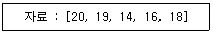
- 19, 20, 14, 16, 18
- 14, 20, 19, 16, 18
- 14, 19, 20, 16, 18
- 20, 14, 19, 16, 18
(정답률: 79%)

2. 데이터베이스를 정의하는 과정에서 주로 사용되는 데이터 언어는?
- DDL
- DCL
- DML
- DQL
(정답률: 81%)
3. 데이터베이스 설계 순서를 바르게 나열한 것은?
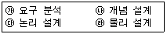
- ㉮-㉯-㉰-㉱
- ㉮-㉰-㉯-㉱
- ㉰-㉯-㉱-㉮
- ㉰-㉱-㉯-㉮
(정답률: 76%)
4. 데이터베이스 내용에 대한 전체적인 뷰(view)라고 볼 수 있는 스키마는?
- 외부 스키마
- 개념 스키마
- 내부 스키마
- 서브 스키마
(정답률: 61%)
5. 아래 이진트리를 후위순서(postorder)로 운행한 결과는?
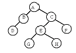
- ABCDEFGH
- DBGHEFCA
- ABDCEGHF
- BDGHEFAC
(정답률: 81%)
6. 깊이가 6인 이진트리의 최대 노드 수는?
- 63
- 64
- 65
- 66
(정답률: 45%)
7. 주기억장치 내에서 이루어지는 정렬 방법은?
- oscillating sort
- balanced sort
- polyphase sort
- insertion sort
(정답률: 62%)
8. 논리적 데이터 모델에 대한 설명으로 옳지 않은 것은?
- 관계형, 계층형, 네트워크형 모델 등이 있다.
- 네트워크형 모델은 레코드들이 링크에 의해서 서로 연결되는 그래프 형태로 구성된다.
- 관계형 모델은 릴레이션의 집합으로 표현된다.
- 계층적 모델은 다대다(n : m) 관계의 표현이 쉽다.
(정답률: 59%)
9. 데이터베이스 관리 시스템의 기능은 데이터를 정의하고 조작하며 제어하는 것이다. 정의 기능은 데이터베이스의 구조와 특성을 정의할 때는 데이터 모델에 따라 명세하고 정의한다. 데이터 모델 중에서 캡슐화(Capsulation), 상속(Inheritance), 다형성(Polymorphism)의 개념을 가지는 데이터 모델은?
- 관계 데이터 모델(Relational Data Model)
- 계층 데이터 모델(Hierarchical Data Model)
- 네트워크 데이터 모델(Network Data Model)
- 객체지향 데이터 모델(Object-Oriented Data Model)
(정답률: 55%)
10. DBMS의 필수 기능에 해당하지 않는 것은?
- 정의기능(definition facility)
- 조작기능(manipulation facility)
- 제어기능(control facility)
- 회복기능(recovery facility)
(정답률: 79%)
11. 기본 키에 속해 있는 애트리뷰트는 항상 널 값을 가질 수 없는 제약을 무엇이라고 하는가?
- 개체 무결성
- 참조 무결성
- 키 무결성
- 널 무결성
(정답률: 64%)
12. Fill in the blank of the sentence.
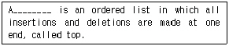
- queue
- stack
- tree
- list
(정답률: 72%)
13. 해싱(Hashing) 기법에 대한 설명으로 옳은 것은?
- 버킷(bucket)이란 한 개의 레코드를 저장할 수 있는 공간으로 N개의 버킷이 모여 슬롯을 형성한다.
- 충돌(collision)이란 서로 다른 키가 동일한 주소로 해싱되는 두 키를 말한다.
- DAM 파일을 구성할 때 해싱이 사용되며, 접근 속도는 빠르나 기억공간이 많이 요구된다.
- 개방주소법(open addressing)이란 오버플로 발생시 이를 별도의 기억 공간에 두고 링크로 연결하여 사용하는 방법을 말한다.
(정답률: 31%)
14. Which is an incorrect sentence that explains the responsibility of DBA?
- DBA is responsible for writing application programs that use the database in a language such as COBOL, PL/1, C or Pascal.
- DBA is responsible for deciding the storage and access strategy.
- DBA is responsible for defining security and integrity checks.
- DBA is responsible for monitoring performance and responding to changing requirements.
(정답률: 39%)
15. 내장 SQL에 대한 설명으로 옳지 않은 것은?
- 삽입 SQL 실행문은 호스트 실행문이 나타날 수 있는 곳이면, 어디에서나 사용 가능하다.
- SQL문에 사용되는 호스트 변수는 콜론(:)을 앞에 붙인다.
- 응용 프로그램에서 내장 SQL문은 ‘EXEC SQL'을 앞에 붙여 다른 호스트 명령문과 구별한다.
- 내장 SQL문의 호스트 변수의 데이터 타입은 이에 대응하는 데이터베이스 필드의 SQL데이터 타입과 일치하지 않아도 된다.
(정답률: 56%)
16. 시스템 카탈로그에 대한 설명으로 부적합한 것은?
- 데이터베이스 시스템에 따라 상이한 구조를 가진다.
- 사용자도 SQL을 이용하여 검색할 수 있다.
- 데이터베이스에 대한 통계정보가 저장될 수 있다.
- 사용자 데이터베이스이다.
(정답률: 58%)
17. 뷰(VIEW)에 대한 설명으로 옳지 않은 것은?
- 데이터의 접근을 제어하게 함으로써 보안을 제공한다.
- 사용자의 데이터 관리를 간단하게 해 준다.
- 뷰가 정의된 기본 테이블이 삭제되면, 뷰도 자동적으로 삭제된다.
- 하나 이상의 기본 테이블로부터 유도되어 만들어지는 실제 테이블이다.
(정답률: 81%)
18. 비선형 자료구조에 해당하는 것은?
- 리스트
- 스택
- 큐
- 그래프
(정답률: 74%)
19. 개체-관계(E-R) 다이어그램에 대한 설명으로 옳지 않은 것은?
- 개체 타입은 타원으로 표시된다.
- 현실 세계를 사람이 잘 이해할 수 있도록 표현한 개념적 구조이다.
- 특정 DBMS를 고려한 것은 아니다.
- 관계 타입은 다이아몬드 형태로 나타낸다.
(정답률: 69%)
20. 관계 데이터 모델에서 하나의 애트리뷰트(attribute)가 취할 수 있는 모든 원자 값들의 집합을 무엇이라고 하는가?
- 도메인
- 스키마
- 튜플
- 엔티티
(정답률: 61%)
2과목: 전자 계산기 구조
21. ALU의 목적은?
- OP 코드의 번역
- 산술과 논리 연산의 실행
- 필요한 기계 사이클 수의 계산
- 어드레스 버스 제어
(정답률: 63%)
22. 하나의 AND 회로와 E-OR 회로를 조합한 회로는?
- 반가산기
- 전가산기
- 래치
- 플립플롭
(정답률: 59%)
23. 영문자(alphanumeric) 코드에 해당하는 것은?
- Gray Code
- BCD Code
- ASCII Code
- Access 3 Code
(정답률: 62%)
24. 중앙처리장치에서 사용되는 레지스터(register)의 종류가 아닌 것은?
- Accumulator
- Program Counter
- Instruction Register
- Full Adder
(정답률: 54%)
25. 인터럽트의 종류 중 발생 요인이 전혀 다른 인터럽트는?
- external interrupt
- internal interrupt
- trap
- software interrupt
(정답률: 22%)
26. 부동소수점 표현의 수들 사이의 곱셈 알고리즘 과정에 해당되지 않는 것은?
- 0인지 여부를 조사한다.
- 가수의 위치를 조정한다.
- 가수를 곱한다.
- 결과를 정규화 한다.
(정답률: 38%)
27. 데이지체인(daisy-chain) 우선순위 인터럽트 방법에서 인터럽트를 발생하는 장치들의 연결 방법은?
- 모든 장치를 직렬로 연결한다.
- 모든 장치를 병렬로 연결한다.
- 직렬과 병렬로 연결한다.
- 우선순위에 따라 직렬 및 병렬로 연결한다.
(정답률: 42%)
28. 인터럽트 원인이나 종류를 판별하는 소프트웨어에 의한 방법은?
- Polling
- Daisy chain
- Decoder
- Multiplex
(정답률: 59%)
29. 2진수 (1010)2을 그레이 코드로 변환하면?
- (1010)
- (0101)
- (1111)
- (0000)
(정답률: 59%)
30. 명령 형식 중에서 스택(stack)을 필요로 하는 것은?
- 3주소 명령어
- 2주소 명령어
- 1주소 명령어
- 0주소 명령어
(정답률: 57%)
31. 디지털 코드 중에서 에러 검출 및 교정이 가능한 코드는?
- 그레이(Gray) 코드
- 해밍(Hamming) 코드
- 3초과(Excess-3) 코드
- BCD 코드
(정답률: 72%)
32. 컴퓨터에서 사용되는 명령어들을 기능별로 분류할 때 분류 기준에 포함되지 않는 것은?
- 함수 연산 기능
- 주소계산 기능
- 전달 기능
- 입·출력 기능
(정답률: 43%)
33. “동기 디지털 시스템에 내장되어 있는 모든 레지스터의 타이밍은( )에 의하여 제어된다.” ( )에 올바른 용어는?
- 마스터 클록 발생기
- 프로그램 카운터
- 스택 포인터
- 플립플롭
(정답률: 31%)
34. 전자계산기의 입·출력에 필요한 기능이 아닌 것은?
- 입·출력 버스
- 입·출력 인터페이스
- 입·출력 제어
- 입·출력 기억
(정답률: 50%)
35. 다음과 같은 명렁어의 기능은?
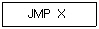
- 제어 기능
- 함수 연산 기능
- 전달 기능
- 입·출력 기능
(정답률: 35%)
36. 2의 보수 표현 방식으로 8비트의 기억 공간에 정수를 표현할 때 표현 가능 범위는?
- -27 ~ +27
- -28 ~ +28
- -27 ~ +(27-1)
- -28 ~ +2(8-1)
(정답률: 48%)
37. 입력장치인 동시에 출력 장치로도 사용할 수 있는 것은?
- 카드판독장치
- 카드천공장치
- 인쇄장치
- 자기테이프장치
(정답률: 43%)
38. 메모리의 내용을 어드레스 할 수 있는 메모리는?
- associative 메모리
- ROM
- RAM
- 자기테이프장치
(정답률: 37%)
39. 인터럽트 벡터에 필수적인 것은?
- 분기번지
- 메모리
- 제어규칙
- Acc
(정답률: 44%)
40. Addressing 방법이 아닌 것은?
- temporary addressing
- direct addressing
- immediate addressing
- index addressing
(정답률: 44%)
3과목: 시스템분석설계
41. 시스템 문서화의 효과로 거리가 먼 것은?
- 시스템 개발 후 시스템의 유지 보수가 용이하다.
- 시스템 개발팀에서 운용팀으로 인계 인수가 쉽다.
- 시스템 개발중 추가 변경에 따른 혼란을 방지한다.
- 시스템 에러 발생시 책임 소재를 분명히 한다.
(정답률: 65%)
42. 파일의 종류 중 내용을 변경하거나 참조할 때 사용하며 일시적인 성격을 지닌 정보를 기록하는 파일은?
- transaction file
- master file
- source data file
- backup file
(정답률: 63%)
43. 출력정보의 설계 순서로 가장 타당한 것은?
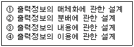
- ③,①,②,④
- ②,①,③,④
- ③,①,④,②
- ②,③,④,①
(정답률: 52%)
44. 입력의 형식 중 발생한 정보를 원시 전표 위에 기록하고 일정 시간 단위로 수집하여 매체화 전문 기기에서 매체화해서 일괄 입력하는 시스템은?
- 집중 입력 방식
- 분산 입력 방식
- 직접 입력 방식
- 반환 입력 방식
(정답률: 65%)
45. 그림과 같이 구성되어 있는 시스템의 신뢰도는?(단, 중앙처리장치의 가동율은 0.9, 프린터 A의 가동률은 0.8, 프린터 B의 가동률은 0.7)
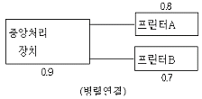
- 0.504
- 0.63
- 0.72
- 0.846
(정답률: 21%)
46. HIPO 기법에 대한 설명으로 옳지 않은 것은?
- 체계화된 문서 작성이 가능하다.
- 상향식(bottom-up) 개발이 용이하다.
- 유지 보수 및 변경이 용이하다.
- 도표 상에 기능 위주로 입력 내용, 처리 방법, 출력 내용이 제시되므로 시스템의 이해가 쉽다.
(정답률: 52%)
47. 컴퓨터 입력 단계의 체크(check) 중 입력 정보의 두 가지 이상이 특정 항목의 합과 같다는 것을 알고 있을 때, 컴퓨터를 이용해서 계산한 결과와 분명히 같은 지를 체크하는 방법은?
- limit check
- check digit check
- batch total check
- balance check
(정답률: 40%)
48. 파일 설계의 순서로 적절한 것은?
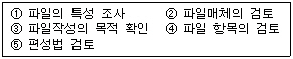
- ①,②,③,④,⑤
- ③,④,⑤,①,②
- ⑤,③,①,④,②
- ③,④,①,②,⑤
(정답률: 66%)
49. 시스템의 기본 요소 중 처리할 데이터 및 조건을 부여하는 것을 의미하는 것은?
- 출력
- 입력
- 제어
- 처리
(정답률: 36%)
50. 자료 사전(Data Dictionary)에서 반복을 의미하는 기호는?
- +
- { }
- [ ]
- ( )
(정답률: 64%)
51. 시스템 평가 항목의 요소와 거리가 먼 것은?
- 신뢰성 평가
- 가격 평가
- 성능 평가
- 기능 평가
(정답률: 68%)
52. 20매로 구성된 디스크 팩(disk pack)에서 한 면에 200개의 트랙(track)을 사용할 수 있다면 실린더는 몇 개가 되는가?
- 200개
- 400 개
- 2000개
- 4000 개
(정답률: 28%)
53. 프로세스의 표준 처리 패턴 중 동일한 파일 형식을 가지고 있는 두 개 이상의 파일을 하나로 정리하는 처리로서, 컴퓨터의 처리 효율이나 파일의 보관 등을 고려해서 하나의 파일로 통합하는 것은?
- Conversion
- Sort
- Merge
- Matching
(정답률: 62%)
54. 객체 지향의 기본 개념 중 데이터와 이 데이터를 조작하는 연산을 하나로 묶는 것을 의미하는 것은?
- 상속성
- 추상화
- 메소드
- 캡슐화
(정답률: 45%)
55. 객체 모델링 기법(Object-Modeling Technique)에서 분석 모델을 설정하기 위해 적용하는 모델링 방법에 해당하지 않는 것은?
- 객체 모형(Object modeling)
- 동적 모형(Dynamic modeling)
- 논리적 모형(Logical modeling)
- 기능 모형(Function modeling)
(정답률: 39%)
56. 코드의 오류 형태 중 입력시 좌우 자리를 바꾸어 발생하는 에러는?
- transposition error
- transcription error
- random error
- omission error
(정답률: 75%)
57. 시스템의 기본적인 특성에 속하지 않는 것은?
- 제어성
- 목적성
- 정보성
- 자동성
(정답률: 52%)
58. 코드 작성시 유의 사항으로 적합하지 않은 것은?
- 공통성이 있어야 한다.
- 복잡성이 있어야 한다.
- 체계성이 있어야 한다.
- 확장성이 있어야 한다.
(정답률: 74%)
59. 클래스(Class)에 관한 설명으로 옳지 않은 것은?
- 클래스는 하나 이상의 유사한 객체들을 묶어서 하나의 공통된 특성을 표현한 것이다.
- 한 클래스를 기준하여 그 기준 클래스의 상위 클래스를 서브 클래스, 하위 클래스를 수퍼클래스라 한다.
- 클래스로부터 새로운 객체를 생성하는 행위를 인스턴스화(instantiation)라 한다.
- 객체의 유형 또는 타입(object type)이 클래스이다.
(정답률: 57%)
60. 다음과 같은 표현방법으로 부여하는 코드는?
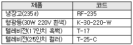
- Sequence code
- Mnemonic code
- Block code
- Group classification code
(정답률: 33%)
4과목: 운영체제
61. 기억 장소의 초기 상태가 다음 그림과 같을 때, 20K를 필요로 하는 프로세스가 도착하여 최적 적합(best-fit) 방식을 적용했을 경우, 할당되는 장소는?
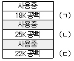
- (ㄱ)
- (ㄴ)
- (ㄷ)
- (ㄱ), (ㄴ)
(정답률: 58%)
62. HRN 스케줄링에서 우선순위 결정의 계산식은?
- (대기시간+실행시간)/실행시간
- (대기시간+서비스 시간)/실행시간
- (대기시간+서비스 시간)/서비스 시간
- (실행시간+서비스시간)/서비스 시간
(정답률: 64%)
63. E. J. Dijkstra가 제안한 방법으로 반드시 상호 배제의 원리가 지켜져야 하는 공유 영역에 대하여 각각의 프로세스들이 접근하기 위하여 사용되는 두 개의 연산 P와 V라는 연산을 통해서 프로세스 사이의 동기를 유지하고 상호 배제의 원리를 보장하는 것은?
- synchronization
- context switching
- monitor
- semaphore
(정답률: 49%)
64. 자원 보호 기법의 종류에 해당하지 않는 것은?
- capability control matrix
- access control matrix
- access control list
- capability list
(정답률: 27%)
65. UNIX에서 새로운 프로세스를 생성시키는 시스템 호출은?
- fork
- exit
- brk
- wait
(정답률: 69%)
66. 교착상태 발생의 필요조건에 해당하는 것으로 짝지어진 것은?
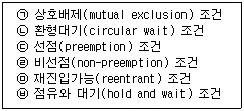
- (ㄱ), (ㄴ), (ㄹ), (ㅂ)
- (ㄱ), (ㄹ), (ㅁ), (ㅂ)
- (ㄴ), (ㄷ), (ㅁ), (ㅂ)
- (ㄱ), (ㄷ), (ㄹ), (ㅂ)
(정답률: 57%)
67. UNIX에 대한 설명으로 옳지 않은 것은?
- 대화식 시분할 운영체제이다.
- 두 사람 이상의 사용자가 동시에 시스템을 사용할 수 있다.
- 대부분 C 언어로 구성되어 있다.
- 동시에 여러 작업을 수행하는 다중 작업(multitasking)을 지원하지 않는다.
(정답률: 61%)
68. 프로그램이 실행되는 과정에서 발생하는 기억 장치 참조는 하나의 순간에는 아주 지역적인 일부 영역에 대하여 집중적으로 이루어진다는 성질을 의미하는 것은?
- monitor
- thrashing
- locality
- working set
(정답률: 53%)
69. 분산 운영체제의 구조 중 모든 사이트는 하나의 중앙 노드에 직접 연결되어 있으며, 중앙 노드에 과부하가 걸리면 성능이 현저히 감소하며, 중앙 노드의 고장시 모든 통신이 이루어지지 않는 구조는?
- ring connection
- star connection
- hierarchy connection
- fully connection
(정답률: 56%)
70. 인터럽트의 종류 중 입/출력 수행, 기억 장치 할당, 오퍼레이터와의 대화 등을 위하여 발생하는 것은?
- 기계 검사 인터럽트
- 외부 인터럽트
- 입/출력 인터럽트
- SVC 인터럽트
(정답률: 27%)
71. 운영체제를 기능적으로 분류했을 때, 처리 프로그램(processing program)에 해당하는 것으로만 짝지어진 것은?
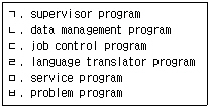
- ㄹ,ㅁ,ㅂ
- ㄱ,ㄴ,ㄷ
- ㄱ,ㅁ,ㅂ
- ㄷ,ㄹ,ㅁ
(정답률: 37%)
72. 분산 처리 시스템의 장점에 해당하지 않는 것은?
- 자원의 공유
- 신뢰도 향상
- 부하의 균형
- 보안의 향상
(정답률: 59%)
73. 각 페이지가 주기억장치 적재될 때마다 그때의 시간을 기억시켜 두고, 주기억장치 내에 가장 오래 있었던 페이지를 교체시키는 페이지 교체 기법은?
- FIFO 기법
- NUR 기법
- LRU 기법
- LFU 기법
(정답률: 30%)
74. 입출력 헤드가 디스크의 한 끝에서 다른 끝으로, 다른 한 쪽 끝에 도달하였을 때는 역방향으로 이동하면서 요청된 트랙에 대한 처리를 해나가는 디스크 스케줄링 기법은?
- FCFS
- SCAN
- SST
- 에센바흐
(정답률: 48%)
75. UNIX에서 사용자 명령의 입력을 받아 시스템 기능을 수행하는 명령 해석기로서 사용자와 시스템간의 인터페이스를 담당하는 것은?
- 커널(Kernel)
- 쉘(Shell)
- 유틸리티(Utility)
- 포트(Port)
(정답률: 65%)
76. 프로세스에 할당된 페이지 프레임 수가 증가하면 페이지 부재의 수가 감소하는 것이 당연하지만 페이지 프레임 수가 증가할 때, 현실적으로 페이지 부재가 더 증가하는 모순(anomaly)현상과 관계 있는 페이지 교체 기법은?
- FIFO
- Optimal
- LRU
- LFU
(정답률: 37%)
77. 다음 CPU 스케줄링 방식 중 비선점(nonpreemptive) 방식에 해당하지 않는 것은?
- SRT 스케줄링
- HRN 스케줄링
- FIFO 스케줄링
- SJF 스케줄링
(정답률: 43%)
78. 다음 중 바람직한 스케줄링 정책이라고 할 수 잇는 것은?
- CPU 이용률을 늘리고 처리량을 최소화시킨다.
- 무조건 먼저 도착한 프로세스를 먼저 실행시킨다.
- 응답시간을 늘리고 반환시간을 줄인다.
- 무한정의 실행연기를 피하기 위해 aging 기법을 사용한다.
(정답률: 51%)
79. 시분할(time-sharing) 처리 시스템에 대한 설명으로 옳지 않은 것은?
- 하나의 CPU를 여러 개의 작업들이 일정한 시간 간격동안 사용함으로써 각각의 작업은 CPU를 공유한다.
- Round-Robin 방식이라고도 한다.
- 시스템의 전체 효율(처리량)은 좋아지나 개인별 사용자 입장에서는 반응 속도가 느려질 수 있다.
- 시스템의 효율 향상을 위하여 작업량이 일정한 수준이 될 때까지 모아두었다가 한꺼번에 일시에 처리한다.
(정답률: 66%)
80. 컴퓨터시스템에서 보안유지 방식의 종류에 해당하지 않는 것은?
- external security
- internal security
- user interface security
- interrupt security
(정답률: 56%)
5과목: 정보통신개론
81. 동기식 전송방식의 특징과 관계없는 것은?
- 전송속도가 빠르다.
- 단말기는 반드시 버퍼기억장치를 실정하여야 한다.
- 송수신의 동기를 유지하기 위하여 동기문자가 사용된다.
- 항상 한 묶음으로 구성된 문자사이의 휴지간격이 존재한다.
(정답률: 50%)
82. 정보통신에서 통신처리의 설명 중 가장 적합한 것은?
- 기계 대 기계의 통신에서 일어날 수 있는 과정으로써 속도변환, 프로토콜 변환, 포맷변환 등을 말한다.
- 문자, 도형, 화상 등의 인식과 변환이다.
- 전송 효율화를 위한 교환이나 다중화기능이다.
- 데이터로부터 목적하는 정보를 창출하고 이를 가공하며, 보관하는 일이다.
(정답률: 40%)
83. 통신제어장치의 역할은?
- 데이터 전송의 특성을 변조시킨다.
- 통신회선을 통하여 송·수신되는 자료를 제어하고 감시한다.
- 수신신호에서 아이 패턴을 복조한다.
- 통신회선을 거쳐온 전송신호를 데이터로 변환시킨다.
(정답률: 66%)
84. 그림의 네트워크 형상(Topology) 구조는?
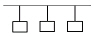
- Bus형
- Token Ring형
- Star형
- Peer to peer형
(정답률: 77%)
85. OSI 7계층 참조모델 중 데이터 링크 계층의 주요기능에 해당되지 않는 것은?
- 프레임 동기
- 출력확인
- 오류제어
- 흐름제어
(정답률: 46%)
86. 데이터 전송시 회선제어절차를 5단계로 연결한 과정으로 옳은 것은?
- 회선접속-데이터 링크의 확립-정보의 전송-링크종결-회선의 절단
- 회선접속-정보의 전송-데이터 링크의 확립-회선의 절단-링크종결
- 데이터 링크의 확립-회선접속-링크종결-정보의 전송-회선의 절단
- 데이터 링크의 확립-정보의 전송-회선접속-회선의 절단-링크종결
(정답률: 61%)
87. 광대역 통신망과는 달리 빌딩이나 공장 구내 등 한정된 지역 내에서 컴퓨터나 단말기들을 고속전송회선으로 연결한 네트워크 형태는?
- WAN
- LAN
- VAN
- ISDN
(정답률: 60%)
88. 프로토콜의 일반적인 기능 중 캡슐화(Encapsulation)할 때 제어정보에 포함되지 않는 것은?
- 연결제어(connection control)
- 프로토콜제어(protocol control)
- 에러검출코드(error detecting code)
- 주소(address)
(정답률: 24%)
89. Start-stop 전송방식이라고 하며 데이터 전송시 한 번에 한 캐릭터씩 전송하는 방식은?
- 동기식 전송방식
- 비동기식 전송방식
- 혼합형 전송방식
- 비혼합형 전송방식
(정답률: 57%)
90. 패킷교환방식에 해당되지 않는 것은?
- 패킷을 일단 메모리에 축적하고 수신처에 따라 적당한 경로를 선택해서 전송한다.
- 우선순위가 허용된다.
- 통신량이 많아지면 몇 개의 호가 거절될 수도 있다.
- 데이터 전송률 변환이 가능하다.
(정답률: 42%)
91. 홀수패리티가 부가된 7비트 ASCII 코드 D(1000001)의 송신데이터는?
- 1000010
- 0100001
- 10000011
- 11000010
(정답률: 39%)
92. 정보통신의 필요성과 관계가 적거나 없다고 볼 수 있는 것은?
- 정보의 이용도 증가로 노동 경제성 향상
- 원격지의 정보처리기기 사이의 효율적 정보교환
- 중요한 컴퓨터(Computer)자원의 공동 활용
- 정보통신망의 초고속화 및 글로벌화
(정답률: 53%)
93. 다음 중 데이터 통신방식이 아닌 것은?
- 전이중통신방식
- 단방향통신방식
- 반이중통신방식
- 업링크통신방식
(정답률: 75%)
94. 뉴미디어 CATV에 대한 설명으로서 옳지 않은 것은?
- 일반 지상파 TV 방송과 컬러색상 구조 및 주사방식이 서로 다르다.
- 다채널로서 방송뿐만 아니라 정보통신서비스가 가능하다.
- 원래 난시청 해소를 목적으로 설치했던 지역 공동안테나 TV 방식이다.
- 전송로는 동축케이블이나 광섬유케이블을 사용한다.
(정답률: 39%)
95. 정보통신망에서 변복조 장치를 단말기에 접속할 때 사용하는 표준안은?
- CSMA/CD 방식
- TCP/IP 방식
- 10 BASE T 방식
- RS-232C 방식
(정답률: 37%)
96. 다음 신호변환장치들의 전송신호와 전송회선의 연결이 잘못된 것은?
- 전화 : 아날로그신호 → 아날로그회선
- 모뎀 : 디지털신호 → 아날로그회선
- 코덱 : 아날로그신호 → 디지털회선
- DSU : 디지털신호 → 아날로그회선
(정답률: 50%)
97. 다음 설명 중 틀린 것은?
- IBM의 SNA는 컴퓨터 간 접속을 용이하게 한 체계화된 네트워크 방식이다.
- 본격적인 데이터통신의 시초는 미국의 반자동 방공시스템(SAGE)이다.
- 온라인시스템의 대량보급으로 정보통신을 위한 표준화의 필요성이 줄어들었다.
- 데이터전송이란 컴퓨터나 데이터단말에 의해 처리할 또는 처리된 정보의 전송을 말한다.
(정답률: 65%)
98. 다음 중 ISDN(Intergrated Service Digital Network)에 관한 설명으로 옳지 않은 것은?
- 음성, 화상, 데이터 등을 별개의 통신망으로 서비스되고 있는 것을 하나의 디지털 통신망에 통합 처리하려는 목적에서 발전되고 있다.
- 기존의 회선교환망이나 패킷교환망도 이용 가능하다.
- 서비스기능은 하위계층인 베어러서비스와 상위계층인 텔레서비스를 모두 포함한다.
- 공중전기통신망인 PSTN과 PSDN에서 제공하는 통신서비스는 제외한다.
(정답률: 54%)
99. 통신회선의 전송용량을 증가시키기 위한 방법으로 적합하지 못한 것은?
- 신호세력을 높인다.
- 잡음세력을 줄인다.
- 데이터 오류 줄인다.
- 주파수 대역폭을 증가시킨다.
(정답률: 48%)
100. 공중데이터 네트워크에서 패킷형 터미널을 위한 DCE와 DTE사이의 접속규격은?
- X.25
- X.24
- X.22
- X.21
(정답률: 50%)
첫 번째 pass에서는 19를 제외한 나머지 숫자들이 모두 왼쪽에 있으므로 19는 그 자리에 그대로 둔다.
두 번째 pass에서는 20이 들어갈 위치를 찾아야 한다. 19와 비교하여 20이 더 크므로 19 오른쪽에 위치한다. 따라서 19, 20, 14, 16, 18이 된다.
세 번째 pass에서는 14가 들어갈 위치를 찾아야 한다. 20과 비교하여 14가 더 작으므로 20의 왼쪽에 위치한다. 그 다음으로 19와 비교하여 14가 더 작으므로 19의 왼쪽에 위치한다. 마지막으로 14보다 작은 숫자가 없으므로 14는 그 자리에 그대로 둔다. 따라서 14, 19, 20, 16, 18이 된다.
네 번째 pass에서는 16이 들어갈 위치를 찾아야 한다. 20과 비교하여 16이 더 작으므로 20의 왼쪽에 위치한다. 그 다음으로 19와 비교하여 16이 더 크므로 19의 오른쪽에 위치한다. 마지막으로 14와 비교하여 16이 더 크므로 14의 오른쪽에 위치한다. 따라서 14, 19, 20, 16, 18이 된다.
다섯 번째 pass에서는 18이 들어갈 위치를 찾아야 한다. 20과 비교하여 18이 더 작으므로 20의 왼쪽에 위치한다. 그 다음으로 19와 비교하여 18이 더 크므로 19의 오른쪽에 위치한다. 마지막으로 16과 비교하여 18이 더 크므로 16의 오른쪽에 위치한다. 따라서 14, 19, 20, 16, 18이 된다.
따라서 정답은 "14, 19, 20, 16, 18"이다.